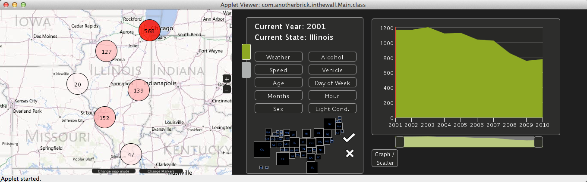

Welcome to the homepage of Group 2's third project of CS424 at UIC in Fall 2012 Semester, Objects in the Rear View Mirror.
Course website is at http://www.evl.uic.edu/aej/424/index.html
Team members of group 2 are: Edoardo Colombo, Daniele Gallingani, Shi Yin.
The purpose of this project are:
- produce an application that visualize high way traffic accidents.
- continue to visualize data with graphs.
- learn how to use map to help visualize geographic data.

Fig.1 Overview of the application
The basic idea of this project is to grab traffic accident data from Fatality Analysis Reporting System of National Highway Traffic Safety Administration and visualize it using both map and graph.
User can select to show different types of data in the plot using the panel. Range of time is still changeable like former projects.
By touching the states map, user can see data for states other than Illinois.
The scatter plot and pie chart gives user general idea about comparison between different data sets.
In the interactive map are the locations of accidents that currently displaying in the graph. User can move the map around, zoom in and out. User can also toggle the type of map between Road map, Aerial map and Hybrid map.
By touching the location markers on the map, user can find the detail information of this accident.